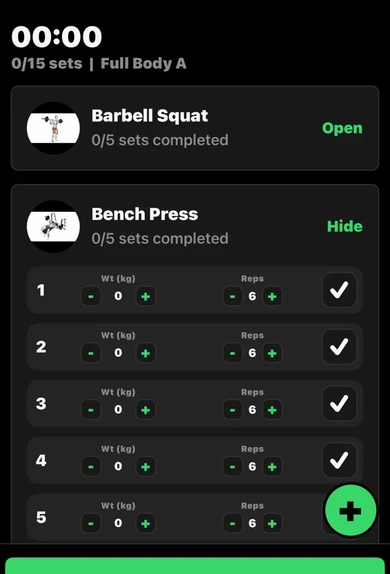
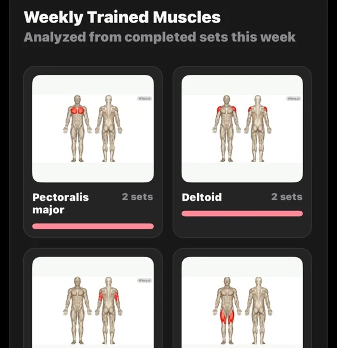
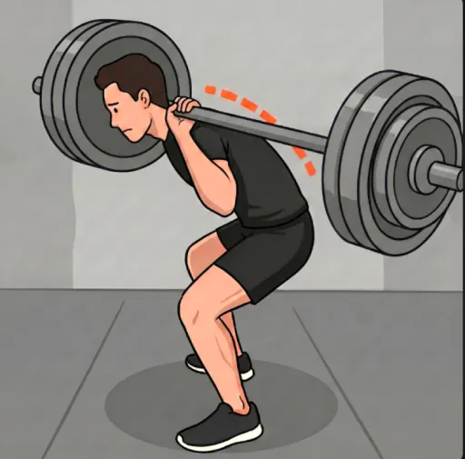

筋力トレーニングの記録一回一回を、
一回一回を、
次の練習へ。
何キロ挙げたか、今週はどこを鍛えたか。セットごとの記録とカメラで、自分のトレーニングを振り返れます。
App Store で見る ↗広告付き・無料 · iPhone / iPadFITCOACH / STUDIOFIG. 01


主な機能
最初のセットから、次の練習まで。
- 01トレーニング前
一週間を計画
種目を選び、練習日をカレンダーに登録。ジムに着いたら、その日のメニューを確認できます。
- 02セットの合間
その場で記録
重量と回数を入力して、終わったセットにチェック。休憩後も続きから取り組めます。
- 03トレーニング後
記録を振り返る
日ごとのトレーニング量を比較。週間マップで、どの筋肉を使ったかを確認できます。

フォームの観察
自分の動きを見る
種目のデモを見たら、カメラと Pose Check でスクワットやデッドリフトの動きとテンポを振り返りましょう。
フォーム観察の補助機能です。医療上の助言や専門家の指導に代わるものではありません。